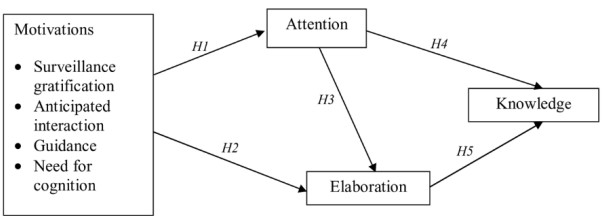
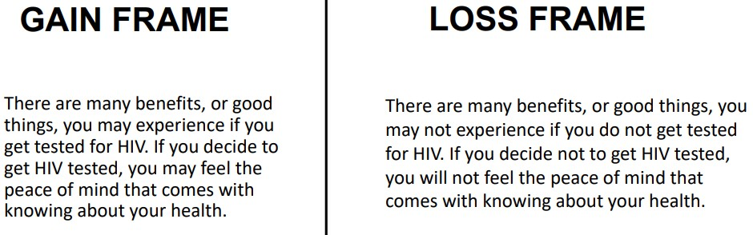
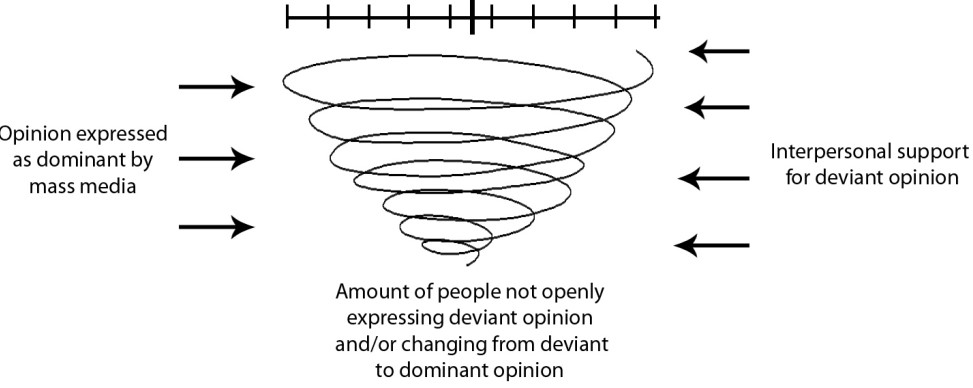

6 Imapct of News Media
Journalists have numerous responsibilities - for instance:
- Informing the public on matters and topics
- Educating the public on and raising awareness on a certain topic
- Nation building
- Acting as a watchman
Furthermore, journalists are also influenced by external parties - for instance, the government, their managers (i.e., bosses), their family, their finances, advertises, and political figures to name a few!
6.1 Filters of Mass Media
According to the book Manufacturing Consent, there are five filters of mass media:
- Media ownership
- Advertising money (i.e., paying for the audience as a product)
- Media elites (i.e., ensuring complicity)
- Flack
- Common enemy
6.2 Why Consume News?
The above diagram lists several terms suggesting why it is that individuals consume news media:
Surveillance Gratification
Individuals have a tendency to use news media as a way of gaining information about their social environments.
Anticipated Interactions
Individuals use social media as a way of finding social resources for future conversations with others.
Guidance
Individuals may use news media as a gauge for how they should behave and feel (about a certain topic).
Need for Cognition
This is a need to understand and find meaning in an experimental world.
Risk Perception
This refers to how seriously perceive a problem.
6.2.1 Passive Consumption
There are two general ways that individuals can passively consume news:
Incidental Exposure
Individuals are coincidentally exposed to news media in spite of them not searching for it.
“News-find-me” Phenomenon
This is the belief that important news will eventually find its way to the individual.
6.2.2 Agenda Setting Theory
This is the belief that although the press may not be able to tell what to think, it can still tell you what to think about.
6.3 Message Framing
Framing has theoretical roots in prospect theory, which states that presenting the same information about risk in different ways alters people’s perspectives, preferences and actions
– Kahneman & Tversky, 1979
Message framing is an idea that utilizes emphasis, exclusion, elaboration, and selection to deliver content.

People are generally risk-averse when it comes time to face losses and vice vesa.
6.4 Spiral of Silence

The spiral of silence states that individuals do not feel comfortable speaking out for themselves if they feel that they are in the minority.
The above is due to the fear of isolation.
6.4.1 Some Assumptions
There are five general assumptions behind this theory:
- Individuals’ opinions are distributed according to some distribution.
- One’s willingness to expose their own views varies according to their expression in 1.
- There is a positive correlation between present and future assessments.
- If there is a divergence, how the individual expects things to unfold will determine whether or not they will speak out.